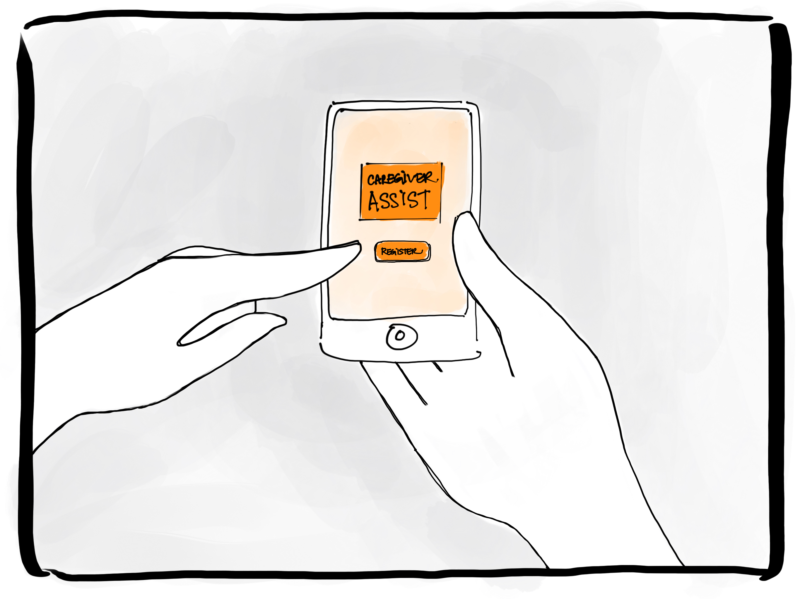

Caregiver Orientation 2.0
A bi-monthly Caregiver Orientation with social workers and former caregiver volunteers, in-person and online, in which the caregiver’s role is validated and institutional supports are explained.
